Tidyverse 1: Data Plotting
Harry Robertson
2025-02-10
Last updated: 2025-03-16
Checks: 7 0
Knit directory: analysis-user-group/
This reproducible R Markdown analysis was created with workflowr (version 1.7.1). The Checks tab describes the reproducibility checks that were applied when the results were created. The Past versions tab lists the development history.
Great! Since the R Markdown file has been committed to the Git repository, you know the exact version of the code that produced these results.
Great job! The global environment was empty. Objects defined in the global environment can affect the analysis in your R Markdown file in unknown ways. For reproduciblity it’s best to always run the code in an empty environment.
The command set.seed(1337) was run prior to running the
code in the R Markdown file. Setting a seed ensures that any results
that rely on randomness, e.g. subsampling or permutations, are
reproducible.
Great job! Recording the operating system, R version, and package versions is critical for reproducibility.
Nice! There were no cached chunks for this analysis, so you can be confident that you successfully produced the results during this run.
Great job! Using relative paths to the files within your workflowr project makes it easier to run your code on other machines.
Great! You are using Git for version control. Tracking code development and connecting the code version to the results is critical for reproducibility.
The results in this page were generated with repository version d75e5ae. See the Past versions tab to see a history of the changes made to the R Markdown and HTML files.
Note that you need to be careful to ensure that all relevant files for
the analysis have been committed to Git prior to generating the results
(you can use wflow_publish or
wflow_git_commit). workflowr only checks the R Markdown
file, but you know if there are other scripts or data files that it
depends on. Below is the status of the Git repository when the results
were generated:
Ignored files:
Ignored: .DS_Store
Ignored: .Rhistory
Ignored: analysis/.DS_Store
Ignored: analysis/.Rhistory
Ignored: analysis/figure/
Unstaged changes:
Modified: analysis/adit/footer.html
Modified: workflow.R
Note that any generated files, e.g. HTML, png, CSS, etc., are not included in this status report because it is ok for generated content to have uncommitted changes.
These are the previous versions of the repository in which changes were
made to the R Markdown (analysis/202502_tidyverse1.Rmd) and
HTML (docs/202502_tidyverse1.html) files. If you’ve
configured a remote Git repository (see ?wflow_git_remote),
click on the hyperlinks in the table below to view the files as they
were in that past version.
| File | Version | Author | Date | Message |
|---|---|---|---|---|
| html | 36dc5fc | DrThomasOneil | 2025-03-03 | Build site. |
| html | 49bb28c | DrThomasOneil | 2025-03-03 | Build site. |
| Rmd | 97303a5 | DrThomasOneil | 2025-03-03 | wflow_publish(c("analysis/*.Rmd")) |
| html | 8258922 | DrThomasOneil | 2025-03-03 | Build site. |
| html | 71646a5 | DrThomasOneil | 2025-02-27 | Build site. |
| html | c7f5738 | DrThomasOneil | 2025-02-24 | Build site. |
| html | 79d09b1 | DrThomasOneil | 2025-02-24 | Build site. |
| html | a5c9f2c | DrThomasOneil | 2025-02-24 | Build site. |
| html | ca2c086 | DrThomasOneil | 2025-02-24 | Build site. |
| html | fca0503 | DrThomasOneil | 2025-02-24 | Build site. |
| html | af42fba | DrThomasOneil | 2025-02-24 | Build site. |
| html | 1aeefc7 | DrThomasOneil | 2025-02-20 | Build site. |
| html | 5fe30de | DrThomasOneil | 2025-02-20 | Build site. |
| Rmd | 477062c | DrThomasOneil | 2025-02-20 | wflow_publish(c("analysis/*.Rmd")) |
| Rmd | a48de9d | DrThomasOneil | 2025-02-20 | new data |
Data manipulation and plotting
Data manipulation and plotting are two of the most important tasks in
data analysis. In this tutorial, we will learn how to manipulate data
and create plots using the dplyr and ggplot2
packages in R. But first, let’s learn how to load data into R.
Setup
Packages
Below is the list of packages that we will be using in this tutorial. Remember, packages need to be installed only once, but they need to be loaded every time you start a new R session.
# Uncomment the following line to install the package if you haven't already!
# install.packages(c("dplyr", "ggplot2", "readxl"))
# Load the packages
library(dplyr)
library(ggplot2)
library(readxl)Create a new project
Set the directory to a common folder you’ll continue to use for these workshops. From here, you’ll be able to create subfolders in R for all new workshops.
# Set your working directory
knitr::opts_knit$set(root.dir = "/Users/thomasoneil/Desktop/analysis-user-group")
# Create a new folder for todays workshop
dir.create("20250210_Tidyverse")Download the relevant data
knitr::opts_knit$set(root.dir = "/Users/thomasoneil/Desktop/analysis-user-group/20250210_Tidyverse")
#Download files
download.file("https://raw.githubusercontent.com/DrThomasOneil/analysis-user-group/refs/heads/main/docs/assets/202502_introSeries/data.rds", "data.rds", method = "curl")
download.file("https://raw.githubusercontent.com/DrThomasOneil/analysis-user-group/refs/heads/main/docs/assets/202502_introSeries/data.csv", "data.csv", method = "curl")
download.file("https://raw.githubusercontent.com/DrThomasOneil/analysis-user-group/refs/heads/main/docs/assets/202502_introSeries/data.tsv", "data.tsv", method = "curl")
download.file("https://raw.githubusercontent.com/DrThomasOneil/analysis-user-group/refs/heads/main/docs/assets/202502_introSeries/data.xlsx", "data.xlsx", method = "curl")If these downloads dont work, run this in your console:
set.seed(123)
data <- data.frame(
patient_id = 1:1000,
age = sample(18:90, 1000, replace = TRUE),
sex = sample(c("Male", "Female"), 1000, replace = TRUE),
height = rnorm(1000, mean = 170, sd = 10)
)
data$weight <- 0.3 * data$height + rnorm(1000, mean = 19, sd = 5)
data$bmi <- data$weight / (data$height / 100)^2
data$disease_status <- rbinom(1000, 1, prob = plogis(0.05 * (data$age - 50) + 0.1 * (data$bmi - 25)))
data$biomarker <- rnorm(1000, mean = 5, sd = 1) + 2 * data$disease_status
data$on_medication <- rbinom(1000, 1, prob = ifelse(data$disease_status == 1, 0.7, 0.1))Loading data into R
There are several ways to load data into R. This will largely depend on the format of the data you are working with. Some of the most common ways to load data into R are:
Loading comma-seperated files (.csv)
Loading tab-delimited files (.tsv)
Loading Excel files (.xslx)
Loading RDS files (R’s native file format)
Loading comma-seperated files (.csv)
One common way is to use the read.csv() function to read
a CSV file. For example, to read a file named data.csv, you
can use the following code:
Loading tab-delimited files (.tsv)
Another way to load data into R is to use the
read.table() function. This function can be used to read
tab-delimited files, as well as files with other delimiters. For
example, to read a tab-delimited file named data.txt, you
can use the following code.
data <- read.table("data.txt", sep = "\t", header = TRUE)
# sep = "\t" specifies that the file is tab-delimited.
# header = TRUE specifies that the first row contains column names.
head(data)Loading Excel files (.xslx)
Finally, a lot of collaborators will often give us data in the form
of an Excel file. To read an Excel file into R, you can use the
readxl package. First, you need to install the package
using the following code:
# Uncomment the following line to install the package if you haven't already!
# install.packages("readxl")
library(readxl)
data <- readxl::read_excel("data.xlsx")
head(data)Loading RDS files
RDS files are R’s native file format. You can save an R object to an
RDS file using the saveRDS() function, and then load it
back into R using the readRDS() function. For example, to
save an object named data to a file named
data.rds, you can use the following code:
# Let's first save the data as an RDS file.
saveRDS(data, "data.rds")
data <- readRDS("data.rds") # To load the data back into R
head(data)Simulating data in R
For todays tutorial, we will be simulating our own patient cohort
data. We will create a data frame with 1000 rows and 5 columns. The
columns will be named patient_id, age,
sex, weight, and height.
We will make use of two functions to generate the data:
sample() and rnorm().
The
sample()function is used to generate random samples from a vector.The
rnorm()function is used to generate random numbers from a normal distribution.
set.seed(123)
# Simulating dataset
data <- data.frame(
patient_id = 1:1000,
age = sample(18:90, 1000, replace = TRUE),
sex = sample(c("Male", "Female"), 1000, replace = TRUE),
height = rnorm(1000, mean = 170, sd = 10)
)
# Simulating weight and BMI
data$weight <- 0.3 * data$height + rnorm(1000, mean = 19, sd = 5)
data$bmi <- data$weight / (data$height / 100)^2
# Disease status: More likely in older individuals and those with higher BMI
data$disease_status <- rbinom(1000, 1, prob = plogis(0.05 * (data$age - 50) + 0.1 * (data$bmi - 25)))
# Biomarker: Higher levels in those with disease
data$biomarker <- rnorm(1000, mean = 5, sd = 1) + 2 * data$disease_status
# Medication usage: More common in those with disease
data$on_medication <- rbinom(1000, 1, prob = ifelse(data$disease_status == 1, 0.7, 0.1))
# View first rows
head(data) patient_id age sex height weight bmi disease_status biomarker
1 1 48 Female 148.2445 65.98587 30.02573 1 7.463864
2 2 68 Female 178.2761 74.95921 23.58517 1 6.262941
3 3 31 Female 157.2832 58.00624 23.44824 0 3.633938
4 4 84 Male 170.7195 73.53580 25.23090 1 8.449282
5 5 59 Female 158.1606 72.18717 28.85781 1 6.065618
6 6 67 Male 171.3138 76.33345 26.00938 1 7.133792
on_medication
1 0
2 1
3 0
4 0
5 1
6 0Data manipulation with dplyr
The dplyr package is a powerful tool for data
manipulation in R. It provides a set of functions that make it easy to
filter, arrange, group, and summarize data. Some of the most commonly
used functions in dplyr are: - filter(): to
filter rows based on a condition - arrange(): to reorder
rows - select(): to select columns - mutate():
to create new columns.
patient_id age sex height weight bmi disease_status biomarker
1 1 48 Female 148.2445 65.98587 30.02573 1 7.463864
2 2 68 Female 178.2761 74.95921 23.58517 1 6.262941
3 3 31 Female 157.2832 58.00624 23.44824 0 3.633938
4 4 84 Male 170.7195 73.53580 25.23090 1 8.449282
5 5 59 Female 158.1606 72.18717 28.85781 1 6.065618
6 6 67 Male 171.3138 76.33345 26.00938 1 7.133792
on_medication
1 0
2 1
3 0
4 0
5 1
6 0Filtering data
The filter() function is used to filter rows based on a
condition. For example, to filter rows where the age column
is greater than 60, you can use the following code:
patient_id age sex height weight bmi disease_status biomarker
1 2 68 Female 178.2761 74.95921 23.58517 1 6.262941
2 4 84 Male 170.7195 73.53580 25.23090 1 8.449282
3 6 67 Male 171.3138 76.33345 26.00938 1 7.133792
4 10 86 Male 164.4221 69.03427 25.53550 1 8.584147
5 11 74 Female 166.8154 72.20822 25.94862 1 6.387301
6 13 89 Male 164.2035 77.98983 28.92498 1 7.648540
7 27 77 Male 167.4946 58.32532 20.79004 1 7.583616
8 28 70 Female 173.9534 72.19051 23.85690 0 5.726190
9 30 70 Male 171.4386 69.27874 23.57126 1 6.294323
10 34 86 Female 186.1114 74.16929 21.41303 1 6.800364
on_medication
1 1
2 0
3 0
4 0
5 1
6 0
7 1
8 0
9 0
10 1Arranging data
The arrange() function is used to reorder rows based on
a variable. For example, to arrange the data by increasing age, you can
use the following code:
patient_id age sex height weight bmi disease_status biomarker
1 104 18 Female 169.2076 73.18860 25.56252 0 6.226862
2 166 18 Male 165.5840 73.67305 26.87025 1 7.603067
3 435 18 Male 173.0596 72.76448 24.29561 0 5.749559
4 481 18 Female 160.1326 69.12269 26.95635 0 4.550437
5 715 18 Female 181.0531 76.28598 23.27196 0 5.196493
6 740 18 Female 167.4844 56.63041 20.18835 0 4.460689
7 879 18 Male 167.6281 59.05507 21.01665 1 8.742190
8 989 18 Male 179.3585 75.66011 23.51923 0 2.761182
9 206 19 Female 162.9964 67.13434 25.26905 0 5.478242
10 208 19 Male 156.8160 60.44886 24.58143 0 5.044170
on_medication
1 0
2 0
3 0
4 1
5 0
6 0
7 0
8 0
9 0
10 0Selecting variables
The select() function is used to select columns from a
data frame. For example, to select only the sex and
disease_status columns, you can use the following code:
sex disease_status
1 Female 1
2 Female 1
3 Female 0
4 Male 1
5 Female 1
6 Male 1This is useful if you want to go on to analyze a smaller subset of data.
disease_status
sex 0 1
Female 234 252
Male 225 289Adding variables
The mutate() function is used to create new columns
based on existing columns. For example, you might want to create a new
variable that categorizes patients based on their biomarker level.
Advanced - Transmute
The transmute() function works like
mutate() but returns only the newly created columns. For
example, you might want to create a dataset with only the patient ID and
a risk score calculated from age and BMI.
patient_id risk_score
1 1 5.402573
2 2 5.758517
3 3 3.894824
4 4 6.723090
5 5 5.835781
6 6 5.950938Advanced - case_when
The case_when() function is a more flexible version of
ifelse(). It allows you to specify multiple conditions and
corresponding values. For example, you might want to create a new
variable that categorizes patients based on their BMI.
data <- data %>%
mutate(bmi_category = case_when(
bmi < 18.5 ~ "Underweight",
bmi >= 18.5 & bmi < 25 ~ "Normal",
bmi >= 25 & bmi < 30 ~ "Overweight",
bmi >= 30 ~ "Obese"
))
head(data, n = 10) patient_id age sex height weight bmi disease_status biomarker
1 1 48 Female 148.2445 65.98587 30.02573 1 7.463864
2 2 68 Female 178.2761 74.95921 23.58517 1 6.262941
3 3 31 Female 157.2832 58.00624 23.44824 0 3.633938
4 4 84 Male 170.7195 73.53580 25.23090 1 8.449282
5 5 59 Female 158.1606 72.18717 28.85781 1 6.065618
6 6 67 Male 171.3138 76.33345 26.00938 1 7.133792
7 7 60 Male 168.5015 70.16094 24.71087 1 7.941038
8 8 31 Female 184.1604 75.25100 22.18807 0 5.458139
9 9 42 Male 169.0342 69.31874 24.26060 0 4.538404
10 10 86 Male 164.4221 69.03427 25.53550 1 8.584147
on_medication bmi_category
1 0 Obese
2 1 Normal
3 0 Normal
4 0 Overweight
5 1 Overweight
6 0 Overweight
7 0 Normal
8 0 Normal
9 0 Normal
10 0 OverweightPlotting with ggplot2
The ggplot2 package is a powerful tool for creating
plots in R. It provides a flexible and intuitive syntax for creating a
wide variety of plots, including scatter plots, bar plots, line plots,
and more.
The basic idea of ggplot2 is to create a plot in layers.
You start by creating a new plot using the ggplot()
function, and then add layers to the plot using functions like
geom_point(), geom_line(),
geom_bar(), and so on.
Below we will initiate our first plot!
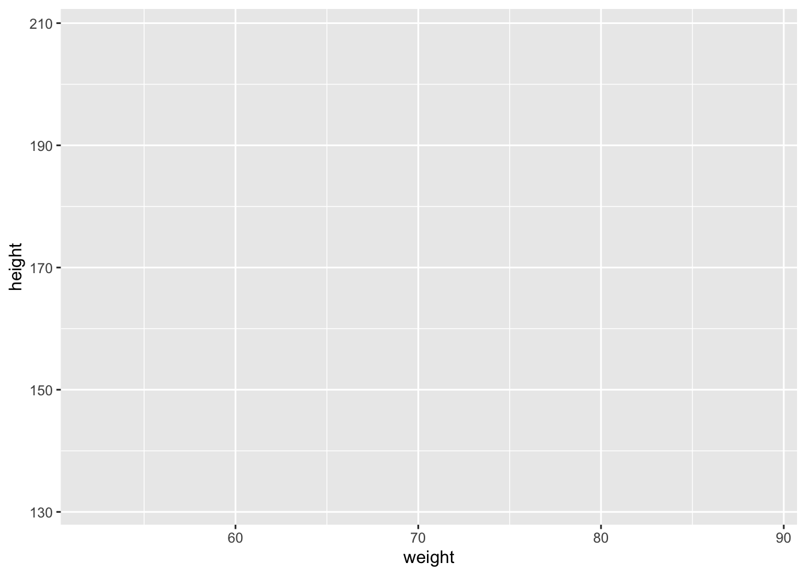
| Version | Author | Date |
|---|---|---|
| 5fe30de | DrThomasOneil | 2025-02-20 |
Obviously this isn’t useful yet, but we will now add layers on top of our canvas to create a plot!
Scatter plots
The ggplot() function is used to create a new plot, and
the geom_point() function is used to add points to the
plot.
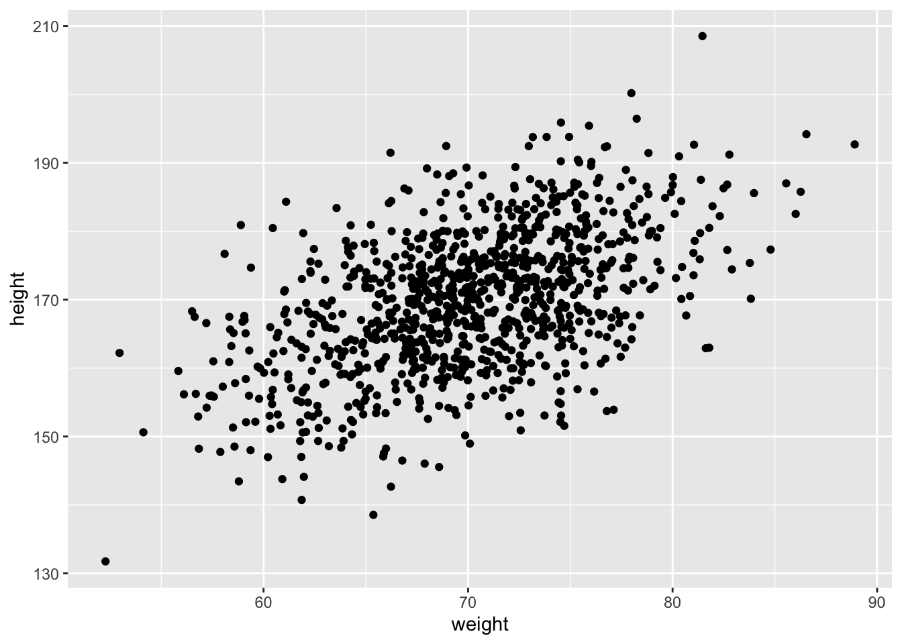
| Version | Author | Date |
|---|---|---|
| 5fe30de | DrThomasOneil | 2025-02-20 |
We can also customize the plot by changing the color and transparency
of the points within the geom_point() function!
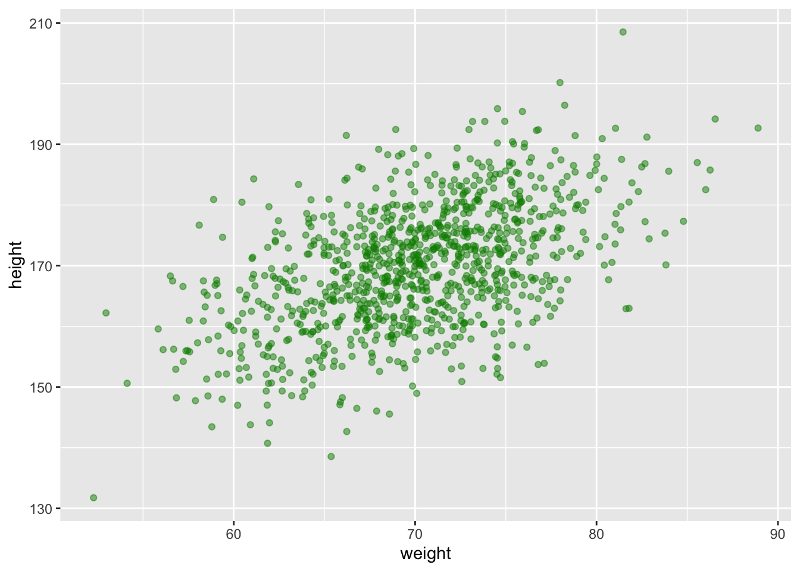
| Version | Author | Date |
|---|---|---|
| 5fe30de | DrThomasOneil | 2025-02-20 |
We can also add titles and labels to the plot using the
labs() function.
ggplot(data, aes(x = weight, y = height)) + geom_point(color = "green4", alpha = 0.5) +
labs(title = "Scatter Plot of Weight vs Height",
x = "Weight (kg)",
y = "Height (cm)")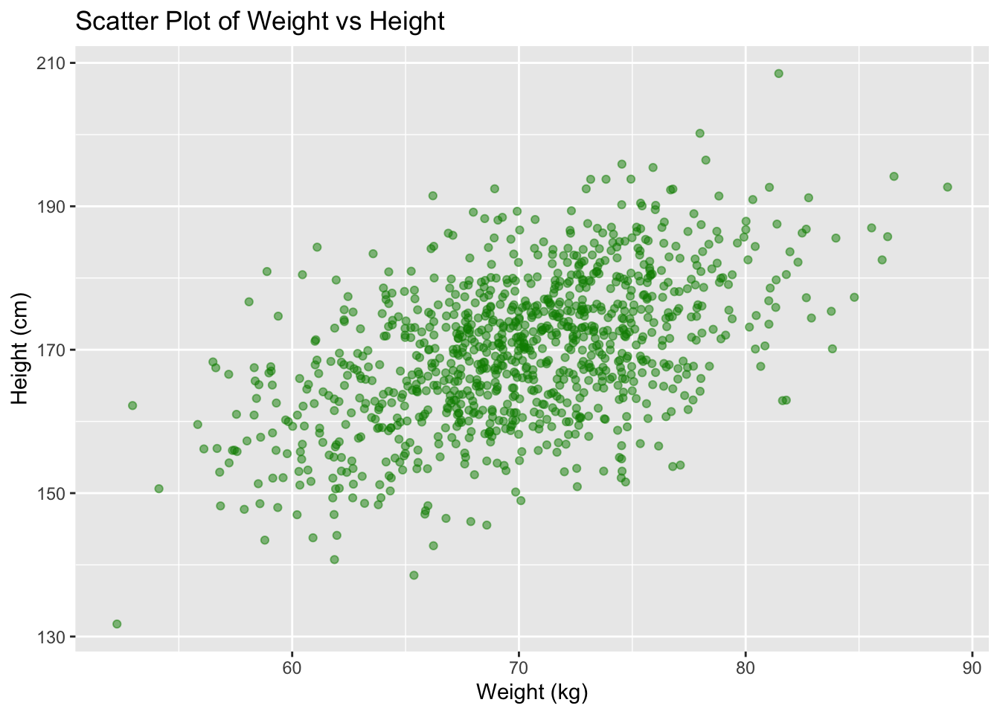
| Version | Author | Date |
|---|---|---|
| 5fe30de | DrThomasOneil | 2025-02-20 |
We can also change the theme of the plot using the
theme_bw() function!
ggplot(data, aes(x = weight, y = height)) + geom_point(color = "green4", alpha = 0.5) +
labs(title = "Scatter Plot of Weight vs Height",
x = "Weight (kg)",
y = "Height (cm)") +
theme_bw()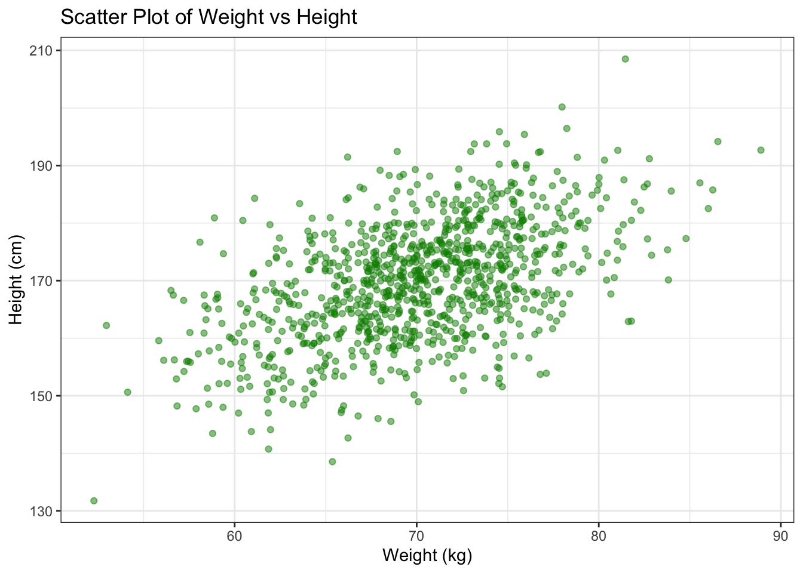
| Version | Author | Date |
|---|---|---|
| 5fe30de | DrThomasOneil | 2025-02-20 |
Box plots
ggplot(data, aes(x = factor(disease_status), y = bmi, fill = factor(disease_status))) + geom_boxplot()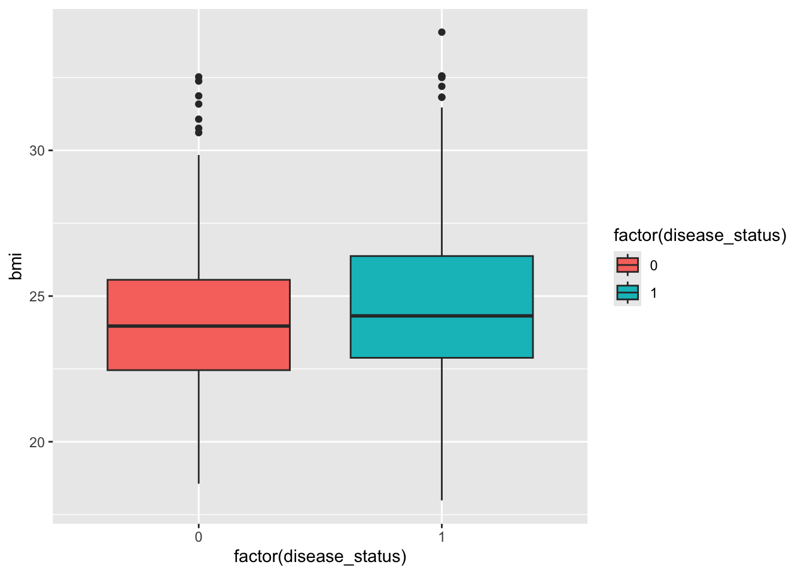
| Version | Author | Date |
|---|---|---|
| 5fe30de | DrThomasOneil | 2025-02-20 |
The current set up of using 0 and 1 to represent disease status is
not very informative. Let’s change the labels to “No Disease” and
“Disease” using the factor() function. We will make use of
mutate() to create a new column with the new labels.
box_plot_data <- data %>%
select(disease_status, bmi) %>%
mutate(disease_status = factor(disease_status, levels = c(0, 1), labels = c("No Disease", "Disease")))
ggplot(box_plot_data, aes(x = disease_status, y = bmi, fill = disease_status)) + geom_boxplot() 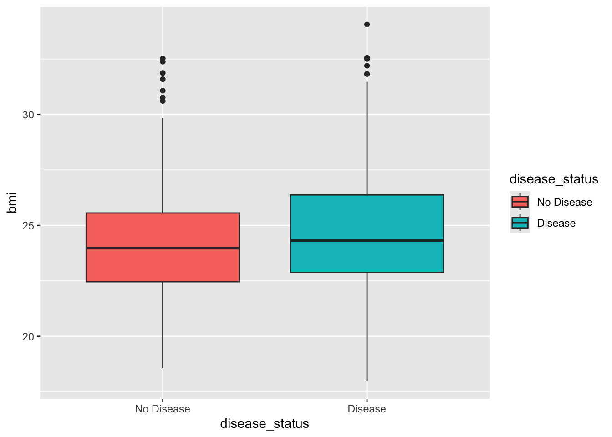
| Version | Author | Date |
|---|---|---|
| 5fe30de | DrThomasOneil | 2025-02-20 |
Line plots
For illustrative purposes, you can simulate a trend over age by
summarizing the average biomarker level per age group. Here we use two
new functions group_by() and summarize() from
the dplyr package to calculate the average biomarker level
per age group.
Simply, the group_by() function is used to group the data
by a variable, and the summarize() function is used to
calculate summary statistics for each group.
age_trend <- data %>%
group_by(age) %>%
summarize(avg_biomarker = mean(biomarker))
ggplot(age_trend, aes(x = age, y = avg_biomarker)) +
geom_line(color = "purple", size = 1) +
labs(title = "Average Biomarker Level by Age",
x = "Age",
y = "Average Biomarker Level") +
theme_bw()Warning: Using `size` aesthetic for lines was deprecated in ggplot2 3.4.0.
ℹ Please use `linewidth` instead.
This warning is displayed once every 8 hours.
Call `lifecycle::last_lifecycle_warnings()` to see where this warning was
generated.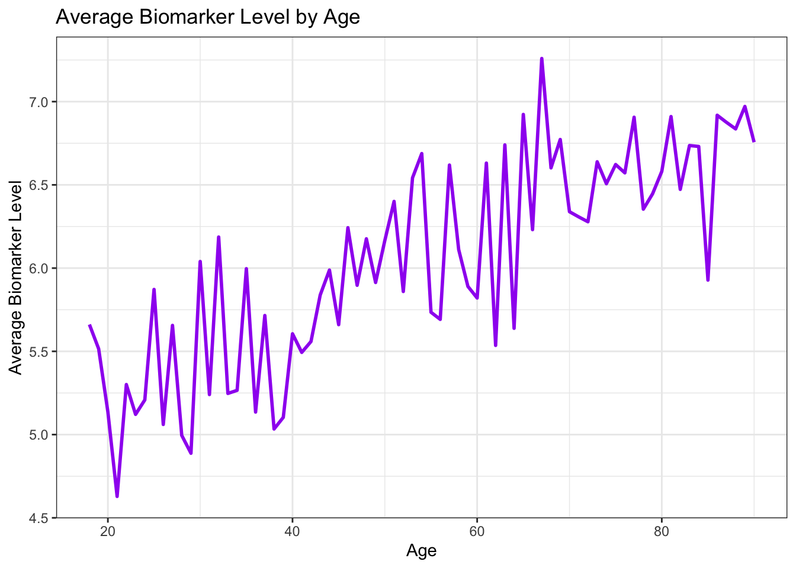
| Version | Author | Date |
|---|---|---|
| 5fe30de | DrThomasOneil | 2025-02-20 |
Bar plots
data %>%
mutate(bmi_category = case_when(
bmi < 18.5 ~ "Underweight",
bmi >= 18.5 & bmi < 25 ~ "Normal",
bmi >= 25 & bmi < 30 ~ "Overweight",
bmi >= 30 ~ "Obese"
)) %>%
ggplot(aes(x = bmi_category, fill = factor(on_medication))) +
geom_bar(position = "fill") +
scale_fill_manual(values = c("lightgrey", "dodgerblue"),
labels = c("Not on Medication", "On Medication")) +
labs(title = "Proportion of Medication Use by BMI Category",
x = "\nBMI Category",
y = "Proportion",
fill = "Medication") +
theme_minimal()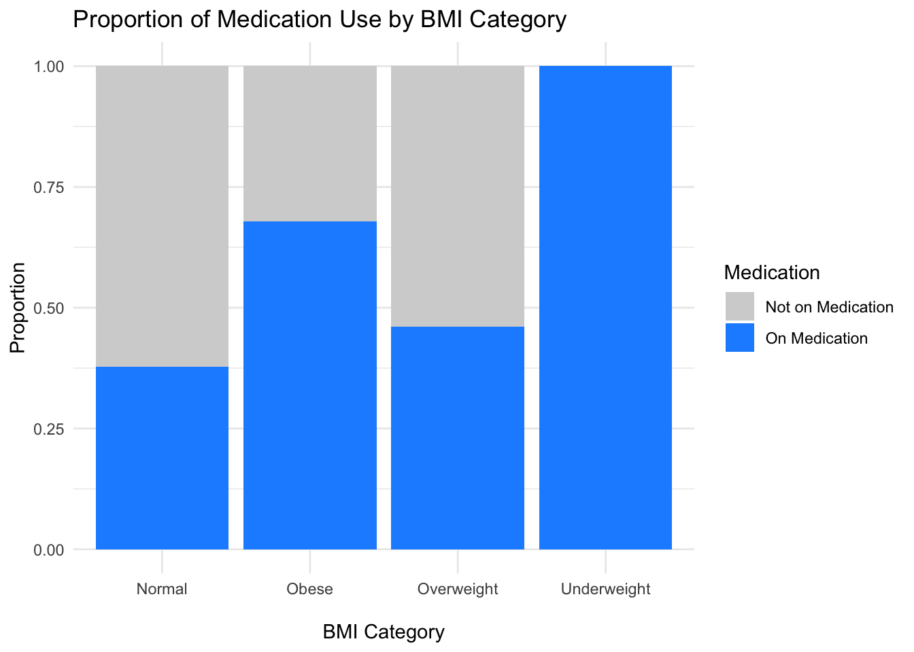
| Version | Author | Date |
|---|---|---|
| 5fe30de | DrThomasOneil | 2025-02-20 |
Histograms
ggplot(data, aes(x = biomarker)) +
geom_histogram(binwidth = 0.5, fill = "cornflowerblue", color = "black") +
labs(title = "Histogram of Biomarker Levels",
x = "Biomarker Level",
y = "Frequency") +
theme_minimal()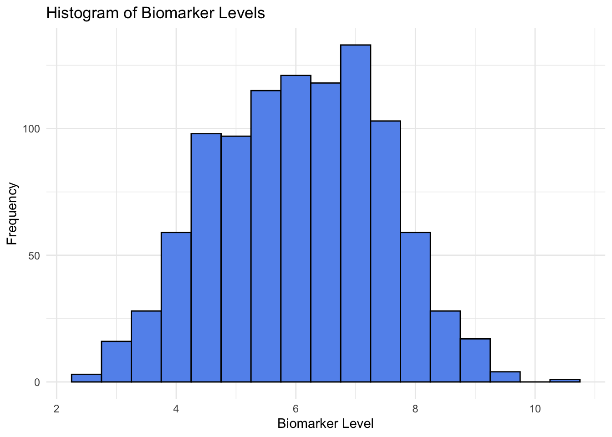
| Version | Author | Date |
|---|---|---|
| 5fe30de | DrThomasOneil | 2025-02-20 |
Advanced plotting
ggplot2 has a lot of advanced features that allow you to
create more complex and customized plots.
Plotting multiple layers
You can plot multiple datasets on the same plot by adding multiple
geom_ layers. For example, let’s plot the average biomarker
level by age group and overlay the individual biomarker levels. (This
doesn’t make a ton of sense but just shows you how to overlay multiple
layers!)
ggplot(age_trend, aes(x = age, y = avg_biomarker)) +
geom_line(color = "purple", size = 1) +
geom_point(data = data, aes(x = age, y = biomarker), color = "steelblue", alpha = 0.5) +
labs(title = "Average Biomarker Level by Age with Individual Data Points",
x = "Age",
y = "Biomarker Level") +
theme_bw()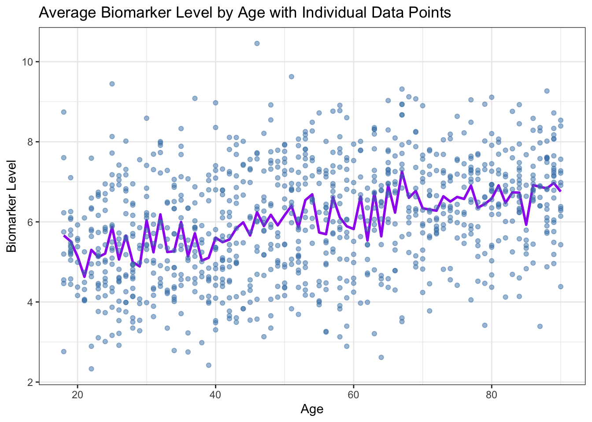
| Version | Author | Date |
|---|---|---|
| 5fe30de | DrThomasOneil | 2025-02-20 |
Plotting with facets
Faceting is a powerful technique for creating multiple plots based on the levels of a categorical variable. For instance, we can compare biomarker distributions between patient sexes.
ggplot(data, aes(x = biomarker, fill = factor(disease_status))) +
geom_histogram(binwidth = 0.5, color = "black", alpha = 0.7) +
facet_wrap(.~ sex) +
scale_fill_manual(values = c("lightblue", "tomato"),
labels = c("No Disease", "Disease")) +
labs(title = "Biomarker Distribution by Disease Status and Sex",
x = "Biomarker Level",
y = "Count",
fill = "Disease Status") +
theme_bw()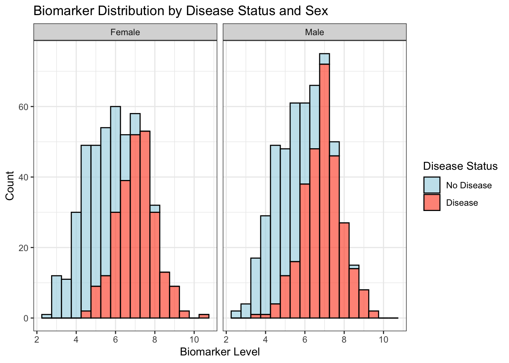
| Version | Author | Date |
|---|---|---|
| 5fe30de | DrThomasOneil | 2025-02-20 |
Plotting with statistics
You can overlay statistical summaries (such as regression lines)
using geom_smooth(). For example, let’s add a regression
line to the scatter plot of weight versus height.
ggplot(data, aes(x = weight, y = height)) +
geom_point(color = "steelblue", alpha = 0.6) +
geom_smooth(method = "lm", se = FALSE, color = "darkred") +
labs(title = "Scatter Plot of Weight vs Height with Regression Line",
x = "Weight (kg)",
y = "Height (cm)") +
theme_minimal()`geom_smooth()` using formula = 'y ~ x'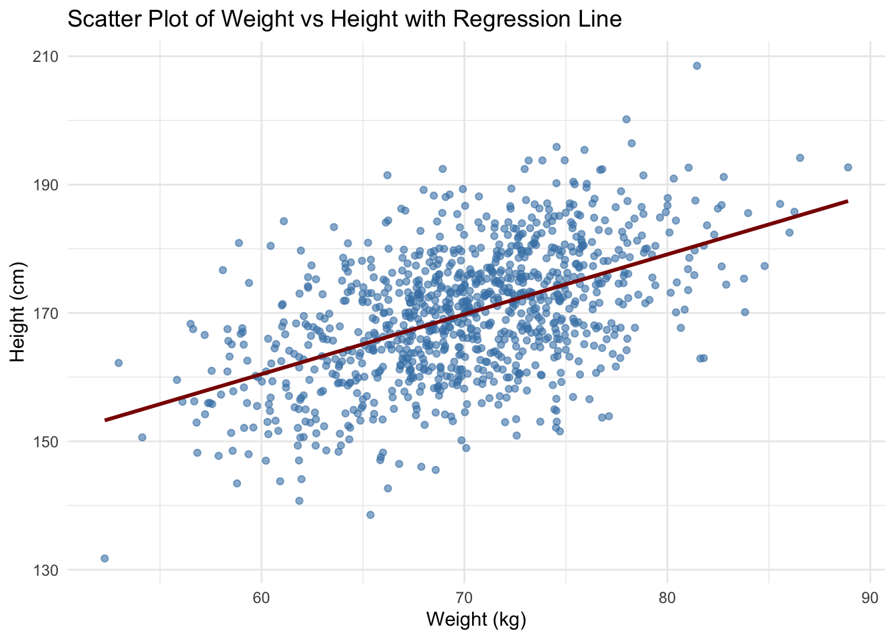
| Version | Author | Date |
|---|---|---|
| 5fe30de | DrThomasOneil | 2025-02-20 |
We can also perform basic statistical tests between groups. For
example, we can compare the average BMI between patients with and
without disease using the stat_compare_means() function
from the ggpubr package.
# Uncomment the following line to install the package if you haven't already!
# install.packages("ggpubr")
library(ggpubr)
box_plot_data <- data %>%
select(disease_status, bmi) %>%
mutate(disease_status = factor(disease_status, levels = c(0, 1), labels = c("No Disease", "Disease")))
ggplot(box_plot_data, aes(x = disease_status, y = bmi, fill = disease_status)) + geom_boxplot() + theme_bw() + stat_compare_means(method = "t.test")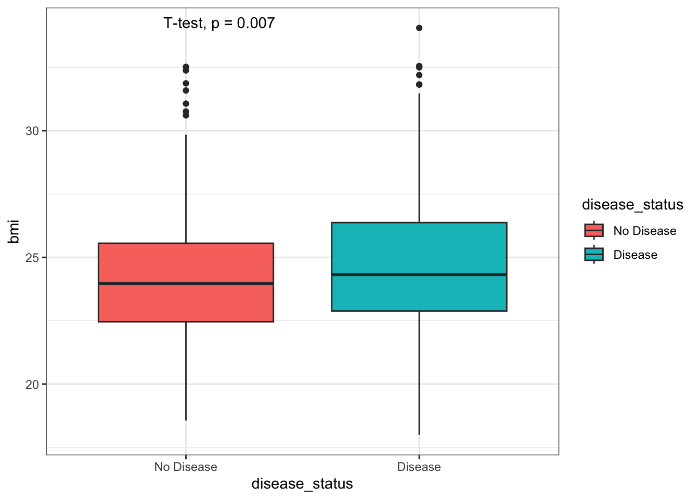
| Version | Author | Date |
|---|---|---|
| 5fe30de | DrThomasOneil | 2025-02-20 |
Conclusion
In this tutorial, we learned how to load data into R, manipulate data
using the dplyr package, and create plots using the
ggplot2 package. We also learned how to customize plots and
create more advanced plots. These skills are essential for any data
analyst or scientist working with R.
R version 4.4.0 (2024-04-24)
Platform: aarch64-apple-darwin20
Running under: macOS Sonoma 14.3
Matrix products: default
BLAS: /Library/Frameworks/R.framework/Versions/4.4-arm64/Resources/lib/libRblas.0.dylib
LAPACK: /Library/Frameworks/R.framework/Versions/4.4-arm64/Resources/lib/libRlapack.dylib; LAPACK version 3.12.0
locale:
[1] en_US.UTF-8/en_US.UTF-8/en_US.UTF-8/C/en_US.UTF-8/en_US.UTF-8
time zone: Australia/Sydney
tzcode source: internal
attached base packages:
[1] stats graphics grDevices utils datasets methods base
other attached packages:
[1] ggpubr_0.6.0 readxl_1.4.3 ggplot2_3.5.1 dplyr_1.1.4
[5] workflowr_1.7.1
loaded via a namespace (and not attached):
[1] tidyr_1.3.1 sass_0.4.9 generics_0.1.3 rstatix_0.7.2
[5] lattice_0.22-6 stringi_1.8.4 digest_0.6.37 magrittr_2.0.3
[9] evaluate_1.0.3 grid_4.4.0 fastmap_1.2.0 Matrix_1.7-1
[13] cellranger_1.1.0 rprojroot_2.0.4 jsonlite_1.9.1 processx_3.8.4
[17] whisker_0.4.1 backports_1.5.0 Formula_1.2-5 ps_1.8.1
[21] promises_1.3.2 httr_1.4.7 mgcv_1.9-1 purrr_1.0.4
[25] scales_1.3.0 jquerylib_0.1.4 abind_1.4-8 cli_3.6.4
[29] rlang_1.1.5 crayon_1.5.3 munsell_0.5.1 splines_4.4.0
[33] withr_3.0.2 cachem_1.1.0 yaml_2.3.10 tools_4.4.0
[37] ggsignif_0.6.4 colorspace_2.1-1 httpuv_1.6.15 broom_1.0.7
[41] vctrs_0.6.5 R6_2.6.1 lifecycle_1.0.4 git2r_0.35.0
[45] stringr_1.5.1 car_3.1-3 fs_1.6.5 pkgconfig_2.0.3
[49] callr_3.7.6 pillar_1.10.1 bslib_0.9.0 later_1.4.1
[53] gtable_0.3.6 glue_1.8.0 Rcpp_1.0.14 xfun_0.50
[57] tibble_3.2.1 tidyselect_1.2.1 rstudioapi_0.17.1 knitr_1.49
[61] farver_2.1.2 nlme_3.1-166 htmltools_0.5.8.1 carData_3.0-5
[65] rmarkdown_2.29 labeling_0.4.3 compiler_4.4.0 getPass_0.2-4